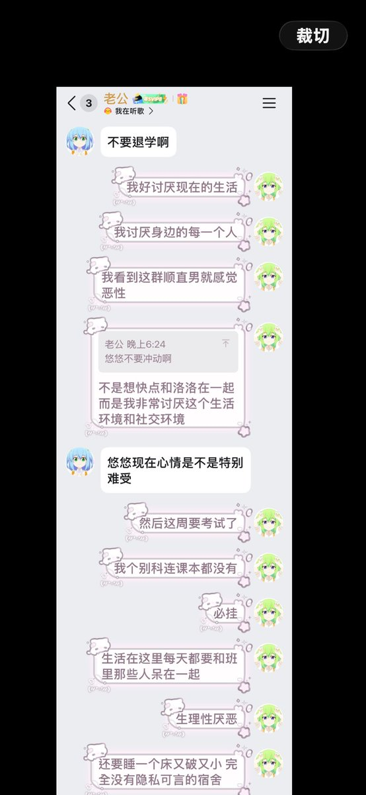
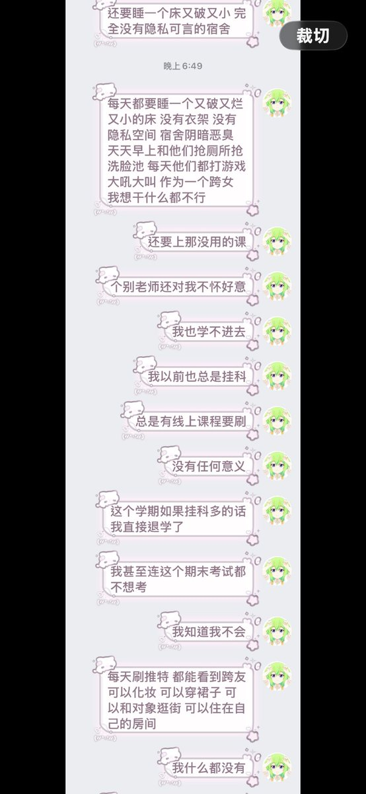
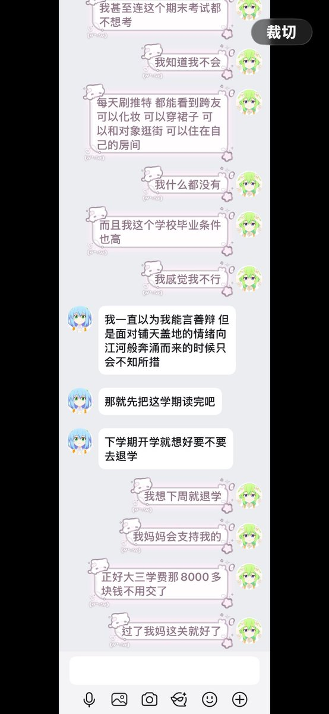

安思瑶🍥
@ansiyao520
没有隐私空间请购买床帘。线上课程请使用ocs网课助手，或者大学搜题酱vip一键托管（约16元每月）。期末考试请在b站搜索xx课程期末3小时突击课。觉得上课没用请在课上玩手机或看自己想看的书。
如果你感觉自己一个人处理困难，可以把这条消息发给你恋人让他替你学习怎么使用这些插件、帮你弄。也可以联系本校心理老师、辅导员请求一些他们的协助。



yoyo🏳️⚧️🍥
@MTFyoyo
我好难过好想退学，我真的坚持不下去了，聊着聊着就哭的稀里哗啦，喝点哈密瓜风味的啤酒缓解一下心情，尽量月底之前办理好退学手续 https://t.co/mbagxDL93w